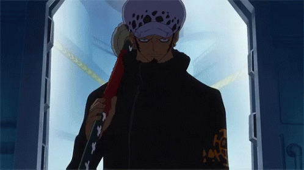
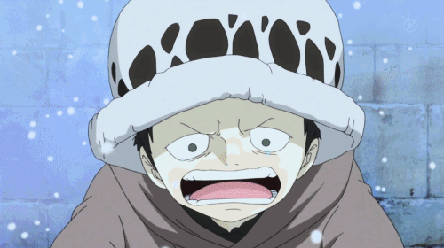

 Trafalgar Law es un hombre joven de estatura media, constitución delgada y tez morena. En lo referente a sus rasgos faciales, la expresión de su rostro se caracteriza por unos penetrantes ojos grises con unas ojeras bastante marcadas bajo los surcos. Tiene el cabello negro perennemente cubierto por un sombrero de piel típico de las tierras del norte, además de lucir patillas y una perilla de chivo en la barbilla. Law tiene múltiples tatuajes de color negro, siendo el más característico el de su mano izquierda, dónde tiene una letra tatuada en negro en cada uno de sus dedos, formando la palabra “D-E-A-T-H”. También tiene tatuado el Jolly Roger de su tripulación en los antebrazos. En sus primeras apariciones, Law viste una sudadera amarilla con capucha y mangas de color negro, y el símbolo de la Jolly Roger de la banda pirata que capitanea impreso en el pecho. Law también usa pantalones vaqueros con unas extrañas marcas en las zonas de las rodillas y los tobillos, y zapatos negros y puntiagudos. Él también tiene un par de pendientes de aro pequeños en cada oreja.
Dos años más tarde (tras el Time Skip), y ostentando ya el título de Shichibukai, Law cambió su sombrero por una gorra del mismo estilo. Viste un abrigo largo y oscuro, con la insignia de su banda pirata en la parte inferior derecha y en la manga derecha del abrigo, con cuello subido. Parece vestir los mismos pantalones y zapatos que hace dos años, y sigue llevando el famoso tatuaje de su mano izquierda. También parece tener el pelo un poco más largo.
 Law conoce a Corazón, un líder supremo, quien es aparte el hermano menor de Doflamingo. Tras conocerse brevemente, Corazón tira por la ventana a Law.Un día, mientras platicaban Buffalo, Baby 5 y él, este les rebela su verdadero nombre, el cual trae una "D" en su apellido. Corazón se entera de ello y por primera vez habla con Law. Corazón, furioso y a la vez muy asustado, le pide a Law que se vaya pronto de la tripulación de Doflamingo, ya que si en verdad es un descendiente de los "D", Doflamingo acabará con el de inmediato.
Corazón se lleva a law a un viaje para encontrar su cura de su enfermedad, corazón y law van por hospital a hospital, pero todos los hospitales tienen miedo de law ya que él tiene una enfermedad "contagiosa" eso causa que corazón destruya (queme) a todos los hospitales.en la isla minion (donde estaban los piratas con la ope ope no mi) Corazón y Law van a buscar antes que Doflamingo o los marinos la fruta del diablo para que Law se la coma y se cure de su enfermedad Corazón deja a Law en un lugar y él va a buscar a la fruta del diablo ya que Law ya está muy débil, Corazón logra con éxito robar la fruta pero unos piratas lo persiguen y ya que él tiene como una "costumbre" de caerse él se cae y ahí unos piratas le disparan, después Corazón logra escaparse.
Corazón sabe que el no puede escapar de Doflamingo así que el decide ocultar a Law en una de las cajas donde había un tesoro al meter a Law en la caja Corazón pone una esfera el rededor de Law con su poder de su fruta del diablo para que Doflamingo no escuche a Law llorar ni hablar, Doflamingo termina matando a Corazón. Law se termina huyendo de Doflamimgo cuando se sale del cofre y sale corriendo mientras se llora por la pérdida de su amigo.